Novosti
-
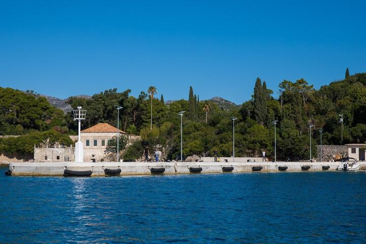
Projekt sanacije i rekonstrukcije rive Donje Čelo
Nakon uspješno završenih radova na rekonstrukciji rive u luci Donje Čelo na Kalamoti, Županijska lučka uprava Dubrovnik ishodovala je uporabnu dozvolu za projekt....
Opširnije... -

Plato Gradac
Kompletna površina obuhvata iznosi 2440,30m2 od kojih je neto 1761,37m2, dok je ozelenjena površina 678,93m2.
Opširnije... -
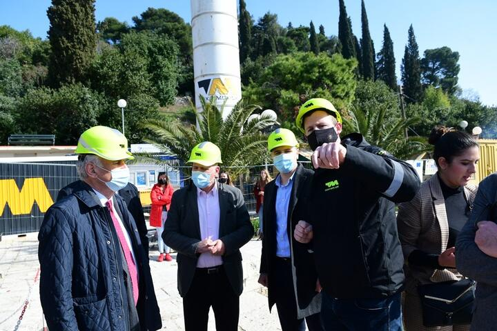
RADOVI NA KALAMOTI ISPRED ROKA
Napreduju radovi na rekonstrukciji i sanaciji luke u Donjem Čelu na Kalamoti, koji su počeli sredinom listopada prošle godine.
Opširnije... -
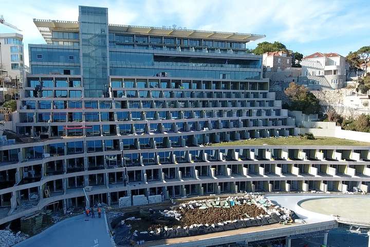
Rekonstrukcija hotela Rixos Dubrovnik
Očekujemo ubrzo otvaranje hotela, a sve novosti vezane za projekt objavljujemo uskoro!
Opširnije... -
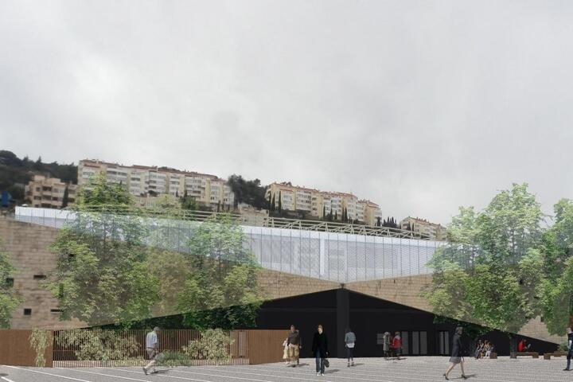
Ugovor o izvođenju radova rekonstrukcije ex-hotela Stadion
Ugovor o izvođenju radova rekonstrukcije ex-hotela Stadion između Grada Dubrovnika kao naručitelja i tvrtke Texo Molior d.o.o. kao izvođača radova potpisali su ovog petka gradonačelnik Mato Franković i Antonio Deranja ispred izvođača radova.
Opširnije... -
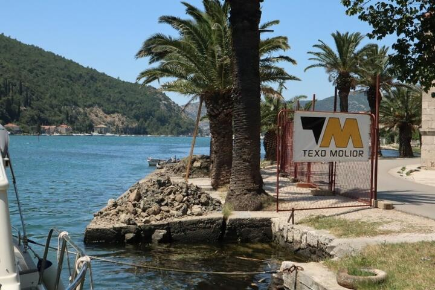
Pokrenuta rekonstrukcija rive u Rožatu
Započeli su radovi na rekonstrukciji rive u Rožatu kako bi se spriječilo daljnje propadanje rive koja je oštećena djelovanjem rijeke na njezine temelje i tlo na kojem je sagrađena.
Opširnije... -
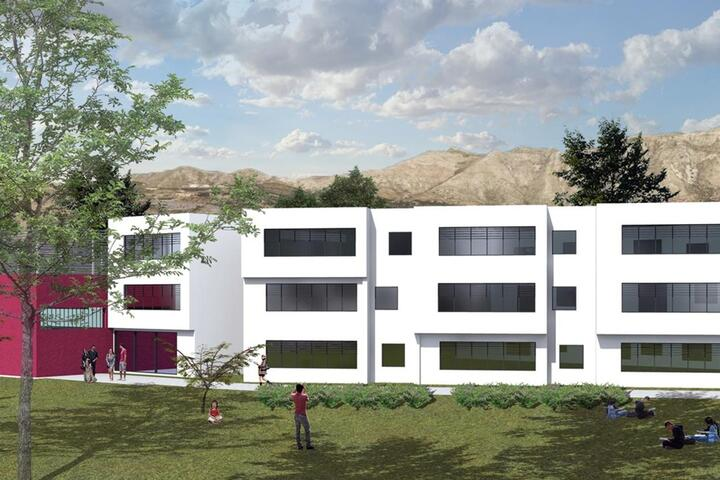
Gradi se prva škola nakon 33 godine
Zajednice ponuditelja Strabag i Texo Molior potpisali su ugovor o dogradnji i nadogradnji buduće Osnovne škole 'Montovjerna' vrijedan 70,6 milijuna kuna.
Opširnije... -
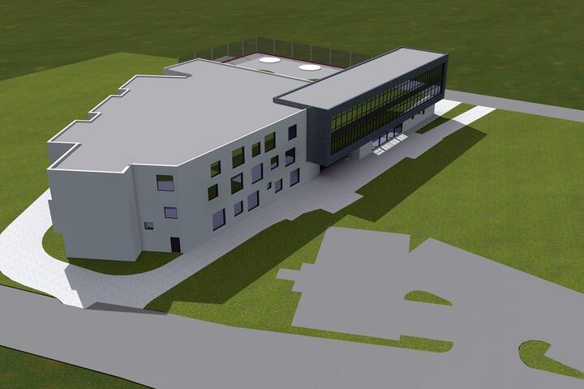
U Dubrovniku se nakon 33 godine gradi nova škola
U Dubrovniku se nakon 33 godine gradi nova škola
Opširnije... -
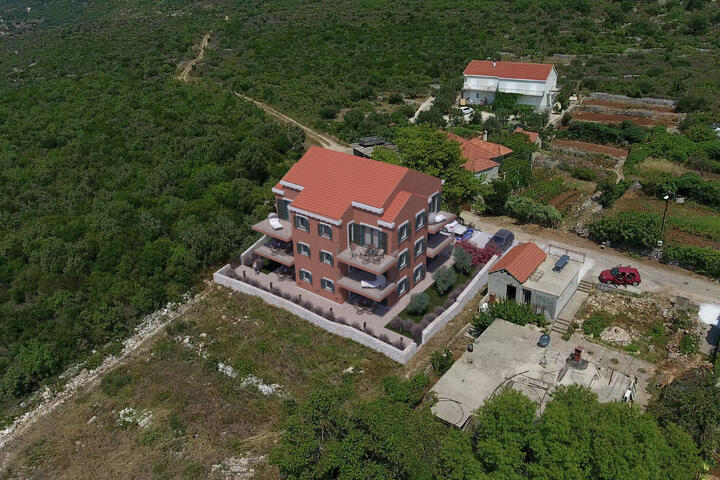
Krenulo u prodaju
Sigurno će vam se sviditi ova prekrasna nekretnina u novogradnji u blizini Cavtata i glavne prometnice za Dubrovnik.
Opširnije... -
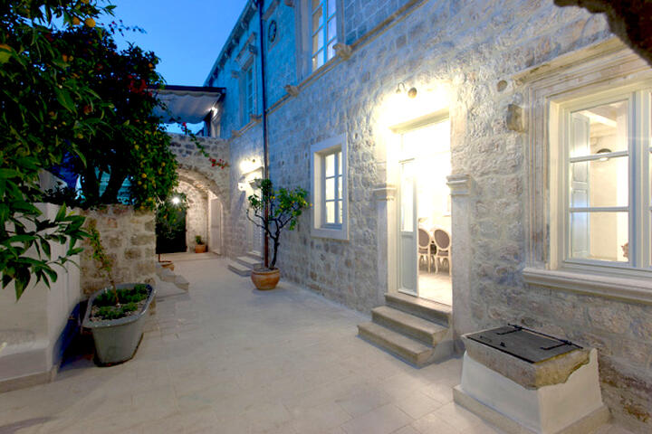
Očaravajući rekonstruirani stari ljetnikovac u Cavtatu
Kolumnistica magazina Storybook Mia Kovačić otisnula se na jug u pitoreskni Cavtat iz kojeg, ekskluzivno za Storybook, donosi priču o starom rekonstruiranom ljetnikovcu kroz koji ju je provela arhitektica Una Barac.
Opširnije... -
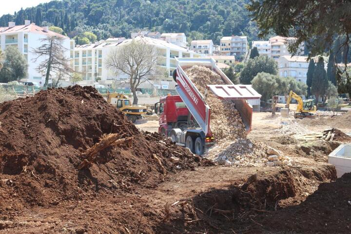
Vjerujete li i vi: radovi završavaju do početka sezone?!
Najavljuje kako će svi planirani zahvati biti dovršeni do početka turističke sezone, što je i definirano potpisanim koncesijskim ugovorom.
Opširnije... -
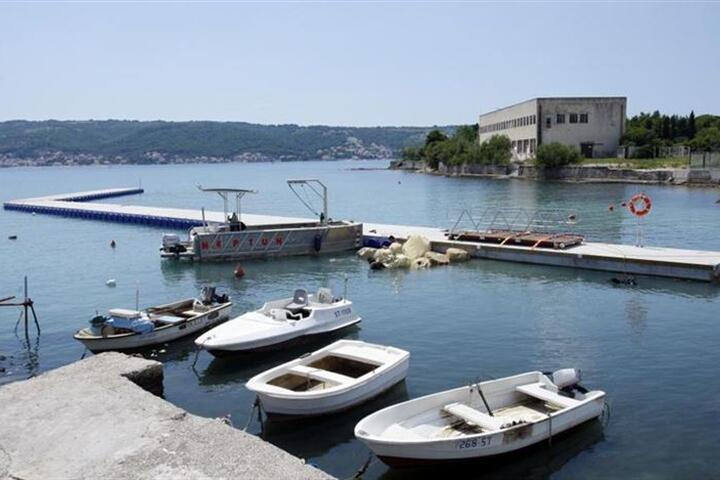
U dan smo postavili 150 metara pontona
Više od 150 metara pontona postavljeno je u petak u Resniku, gdje će s pristaništa sredinom kolovoza krenuti prvi hidroavioni njemačke tvrtke “European Coastal Airlines” i povezati dalmatinske otoke s obalom.
Opširnije... -
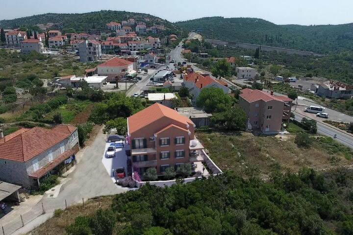
Stanovi u Novogradnji | Zvekovica
Stanovi u novogradnji, blizina Cavtat i glavne prometnice za Dubrovnik.
Opširnije...